Blog
性格と行動の話
ビッグファイブ心理学をベースに、日常の行動・習慣・人間関係を読み解く記事を書いています。
ダイエット × 性格

優しい人が太りやすい理由と、それを変える方法
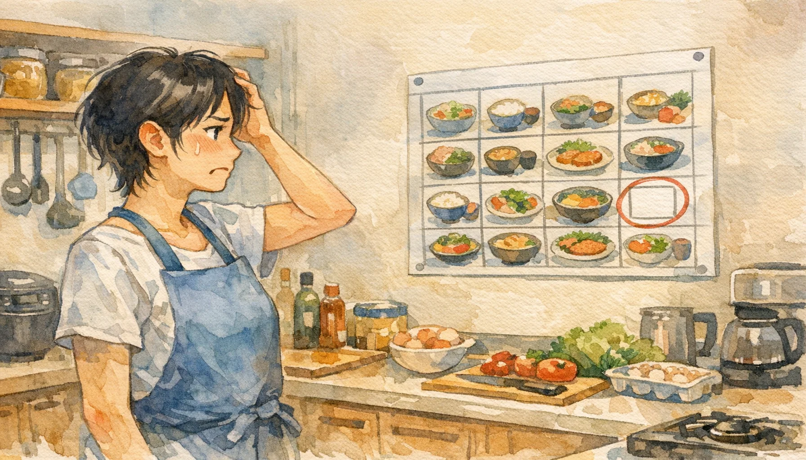
真面目な人ほどダイエットで詰まる理由
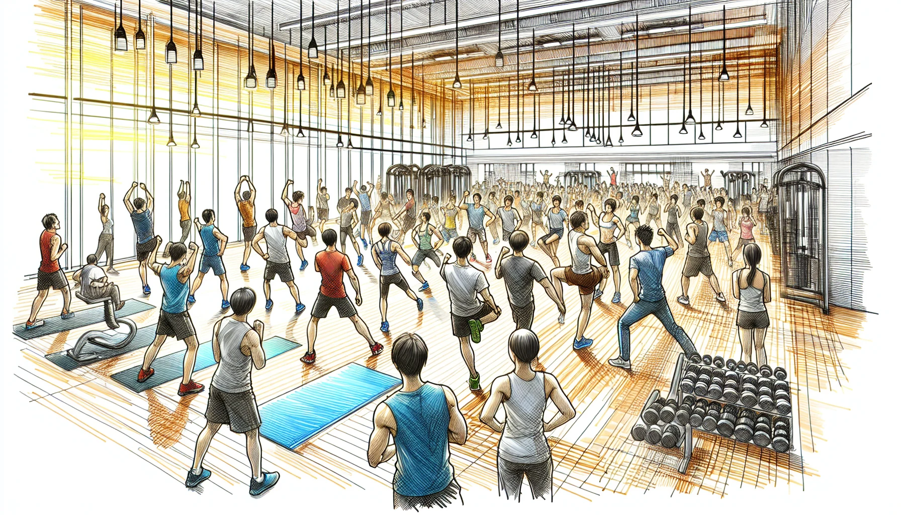
一人でやるから続かない 外向的な人のダイエット設計

内向的な人のダイエットが続かないのは、環境が間違っているからだ
飽き性の人のダイエットが続かない本当の理由
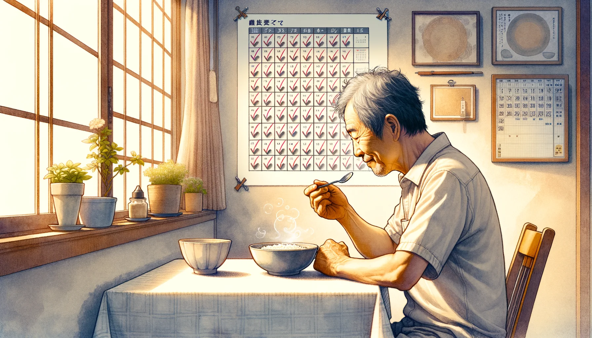
同じことを続けられる人が、ダイエットで一番やってはいけないこと
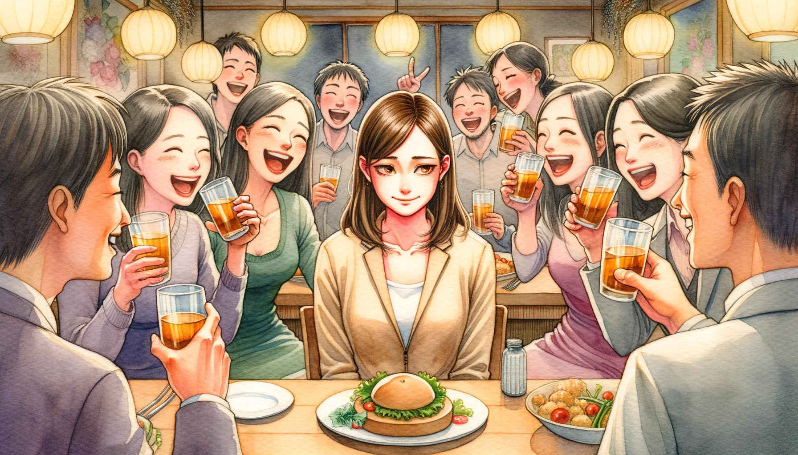
空気を読む人が太りやすい本当の理由 断らない人のためのダイエット設計
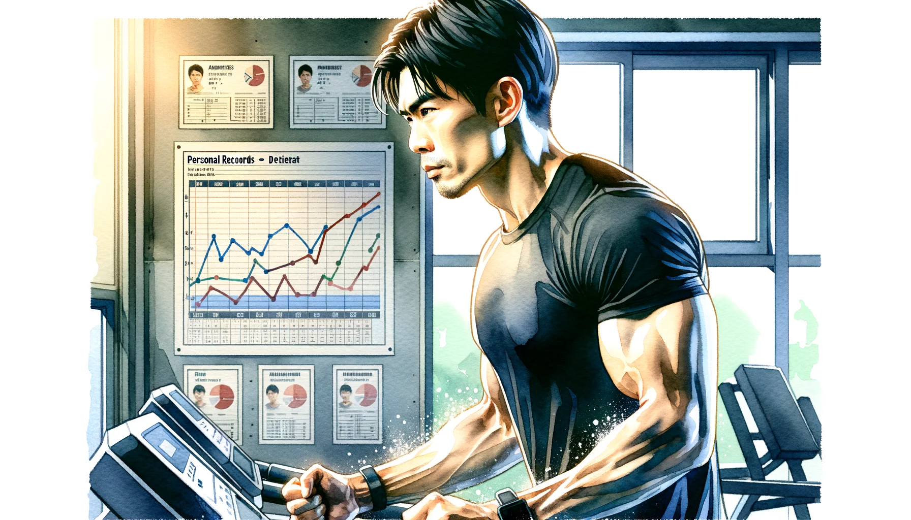
自分流を曲げない人のダイエット 競争心を正しく使う方法

メンタルが安定している人がダイエットで陥る、意外な落とし穴
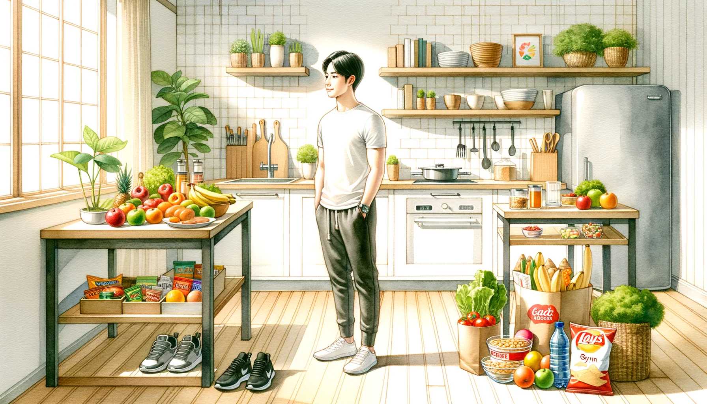
三日坊主の人がダイエットを続けるには、意志力より先にやることがある
性格の悩み
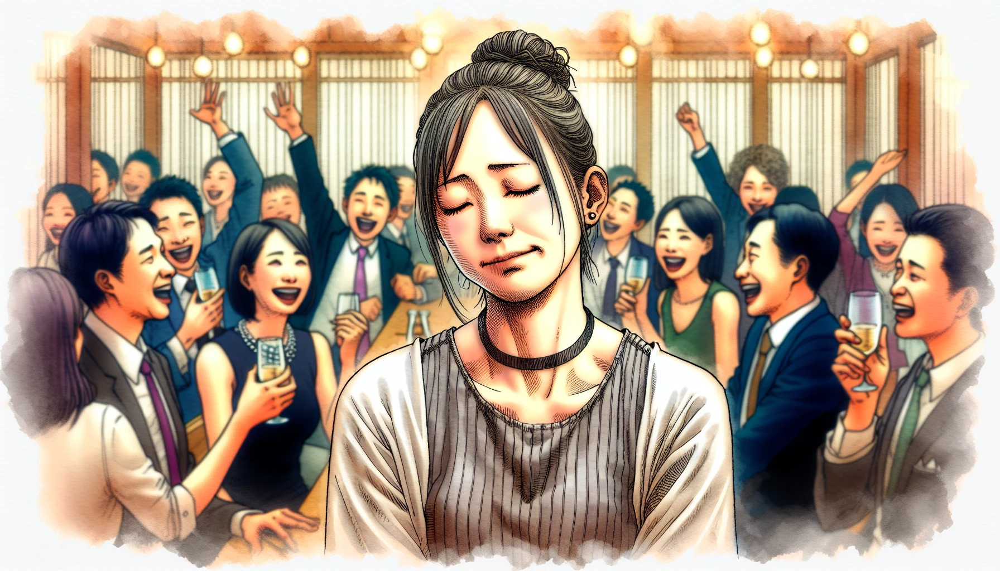
気を使いすぎて疲れる人が知るべき、自分の性格の正体
気を使いすぎる人がバカに見られる、本当の理由
気を使いすぎる人が自己肯定感を上げると、なぜか「行動できる人」に好かれる
完璧主義の人が一番やっていないこと——それは「始めること」
性格は変えられる？心理学が出した、正直な答え
HSPとは？繊細な自分を理解するための基礎知識
価値観を科学する——シュワルツ理論が明かす「何を大切に生きるか」の正体
恋愛 × 性格
「性格が良い人」がモテない本当の理由
考えすぎて動けない人の恋愛——感受性が高い人が一番損をしてる

愛着スタイルとは？人との距離を決める心理学の仕組み
「好き」にも6種類ある——恋愛スタイル理論でわかる、あなたの愛し方
仕事・キャリア
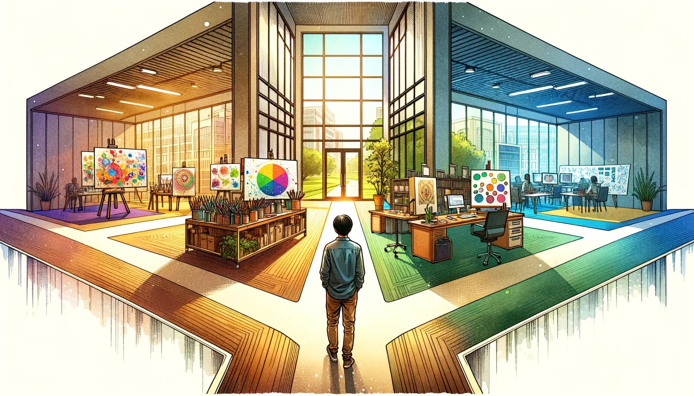
ビッグファイブで分かる、あなたに向いている仕事・向いていない仕事
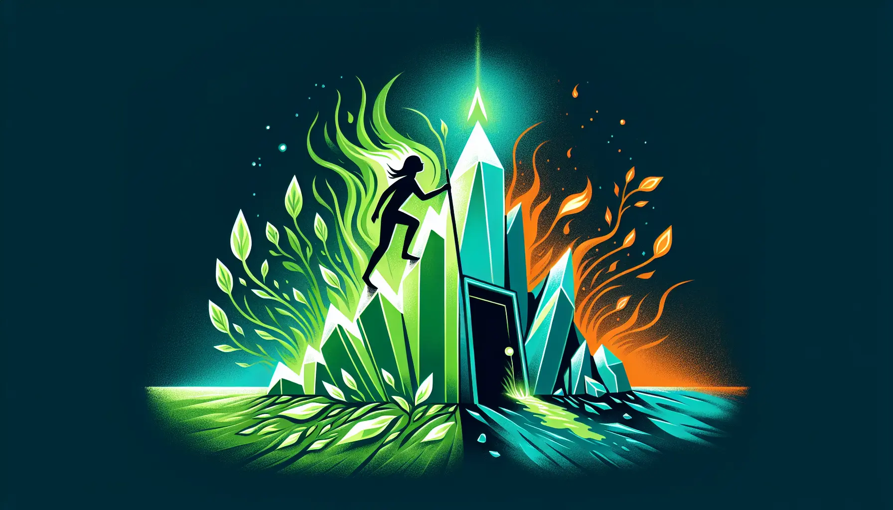
マインドセットとは？「才能は変えられる」と信じる人が結果を出す理由
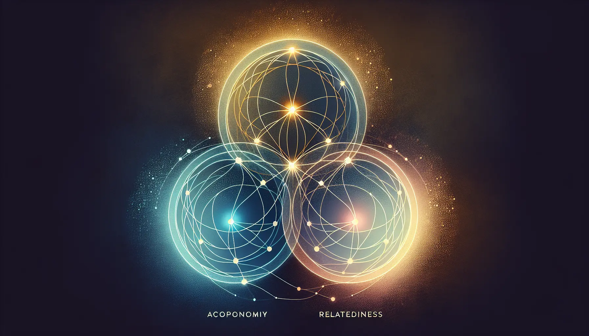
やる気の正体——自己決定理論が教える「動く人」と「動かない人」の違い
性格診断の知識
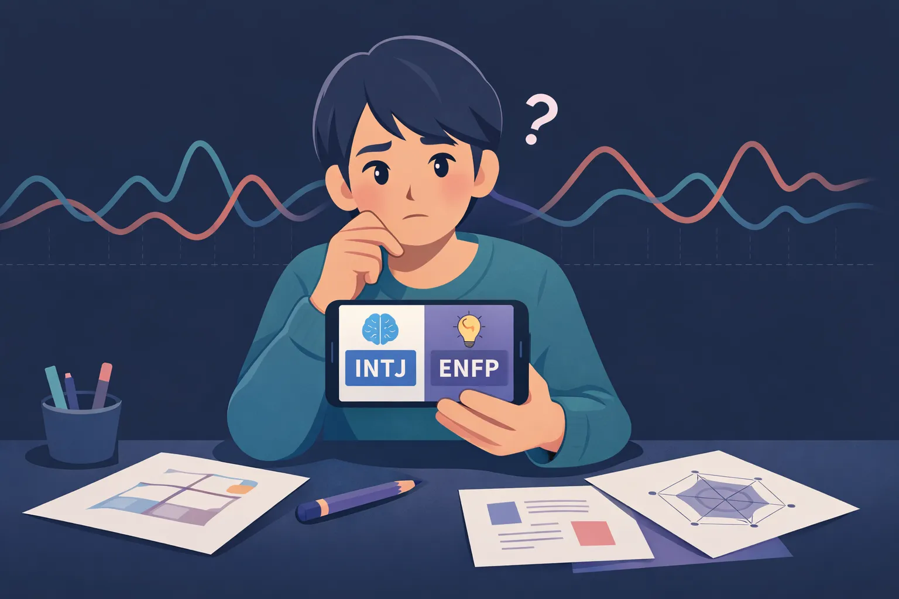
MBTIの診断結果、なぜ変わるのか——科学的に見た3つの弱点
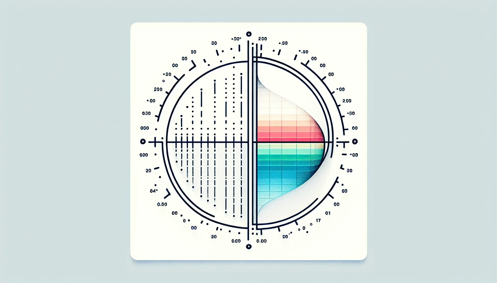
MBTIの診断結果、嘘じゃない？ビッグファイブとの違いを心理学の観点から解説
開放性が高い人の特徴と強み・弱み

開放性が低い人の特徴と強み・弱み
誠実性が高い人の特徴と強み・弱み
誠実性が低い人の特徴と強み・弱み

外向性が高い人の特徴と強み・弱み
外向性が低い人の特徴と強み・弱み
協調性が高い人の特徴と強み・弱み
協調性が低い人の特徴と強み・弱み
神経症傾向が高い人の特徴と強み・弱み
神経症傾向が低い人の特徴と強み・弱み
AI × 性格データ